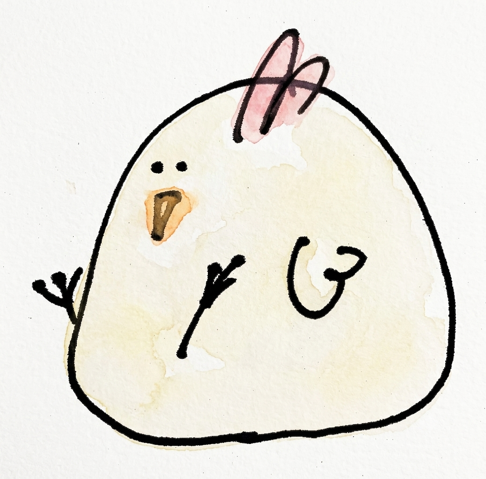
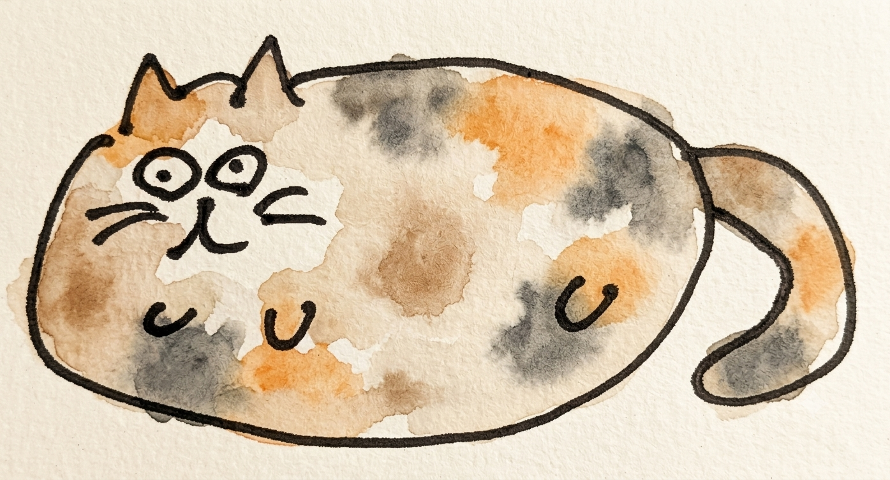
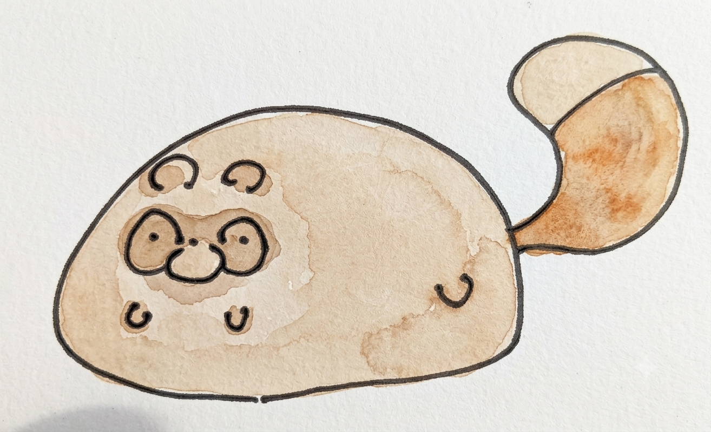
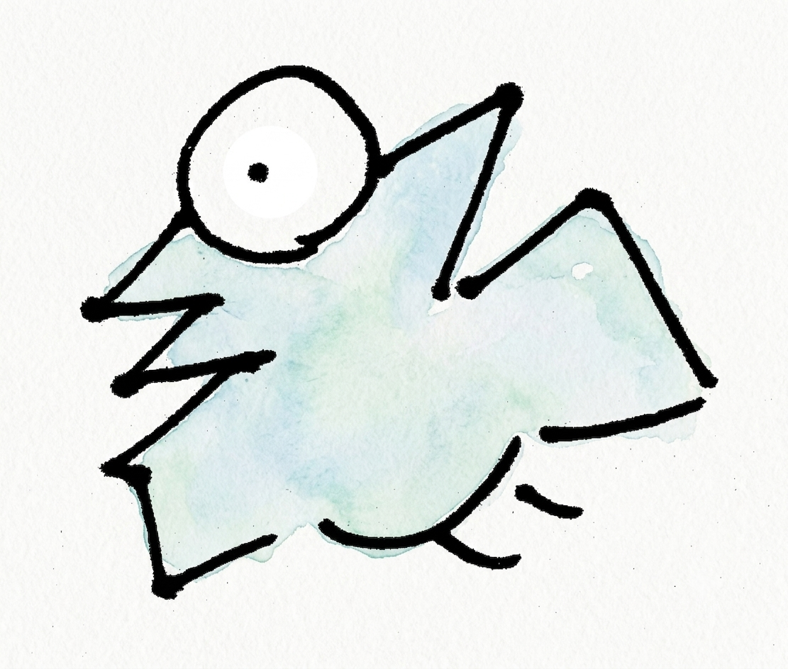
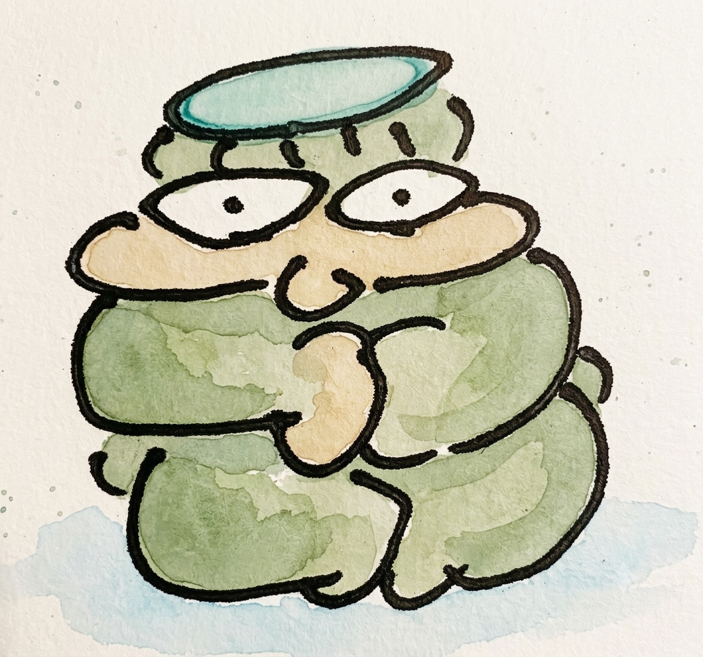

いのころもちの
ゆかいな仲間たち
まんまるなのは、いのころもちだけじゃない。
そのまわりに集まった、ちょっと不思議な仲間たちをご紹介します。
いのころもちが「もちもち、ころころ」なら、まわりの仲間たちも負けてはいません。
もとの姿はニワトリだったり、プテラノドンだったり、河童だったり、猫だったり、たぬきだったり。それぞれ違う生き物だったはずなのに、いのころもちのそばで気ままに暮らしているうちに、なぜだかみんな、まんまるでもちもちになってしまいました。
ひとりひとりの「まんまるになった理由」を、のぞいてみてください。

ぴよころもち
ごはんが美味しくて、いつのまにかまんまるに。
いのころもちのお隣で暮らす、まんまるの鶏。もとは普通の鶏だったはずなのですが、あまりにおいしいごはんを食べつづけていたら、気づけばまんまる・もちもちの姿になってしまいました。トサカだけは元気にぴょこんと立っていて、朝早くから「ぴよ」と鳴いて一日のはじまりを教えてくれます。

にゃんころもち
ごはんを食べすぎて、転がることしかできなくなったサビ猫。
サビ柄がトレードマークの猫ですが、たくさんのごはんをおいしくおいしく食べつづけた結果、体はすっかりころころに。歩くより先に転がってしまうようになり、今では「にゃんころもち」と呼ばれています。転がりながらも、どこか満足げな顔をしているのがチャームポイントです。

たぬころもち
駆け回るより転がるほうが速いと気づいてしまった、まんまるたぬき。
もとはどこにでもいる、どんくさいたぬき。朝から晩まで駆け回っていたのですが、ある日ふと、走るよりごろんと転がったほうがずっと速いことに気づいてしまいました。それからは転がる毎日を送るうちに角という角がすっかり取れてしまい、気づけばまんまるころころのたぬころもちになっていました。

ぷて
そのへんをほげっと飛んでる、なぞの不死身生命体。
見た目はプテラノドン……のはずなのですが、長い年月のあいだにプテラノドンらしさはすっかりどこかへ飛んでいってしまいました。今ではふにゃっと力の抜けた顔で、そのへんの空をほげーっと漂うだけの毎日。何度転んでも、何があっても平気な顔をしている、正体不明の不死身の生命体です。

かっぱ
むっちりしすぎて、泳ぎ方を忘れた河童。
本来は川や池を泳ぎまわるはずの河童ですが、あまりにむっちり育ちすぎたせいで、泳ぐという行為そのものを忘れてしまいました。頭のお皿だけはしっかり守りつつ、いつも「どすこい」と言いたげな、どっしり構えた姿勢でじっとしています。水に入る気配は、今のところ一切ありません。